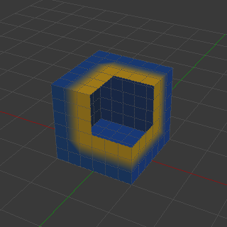

隐藏和遮罩¶
选择遮罩¶
如果网格复杂，在权重绘制模式中的所有顶点上绘制有时并不容易。假设你只想绘制网格的一个小区域，并保持其余部分不变。这时候最好是使用 选择遮罩 。启用此模式后，笔刷将只在选定的顶点或面上绘制。该选项可从3D视图的标题栏中查看（请参阅由黄色框架包围的图标）：

你可以选择 面选择遮罩 （左图标）和 顶点选择遮罩 （右图标）。¶
选择 模式比默认 权重绘制模式 有一些优点：
即使修改器是激活状态，绘制的对象仍是原始网格。
你可以选择面限制绘制到选择面的顶点。
选择工具包括：
关于选择的细节¶
支持以下标准选择操作：
RMB - 选择单面。使用 Shift-RMB 选择多个面。
A - 选择或取消选择所有的面。
B - 框选。
C - 刷选。
L - 拾取关联项(光标方）。
Ctrl-L - 选择关联项。
Ctrl-I - 反转选择 反转 。
Tip
选择形变组
当你正在做变形骨骼（带有骨架）的权重绘制时，可以通过选择相应的骨骼来选择形变组。但是，选择遮罩处于活动状态时，此顶点组选择模式将被禁用！

隐藏/显示面¶

隐藏面。¶
You also can hide selected faces as in Edit Mode with the keyboard Shortcut H, then paint on the remaining visible faces and finally unhide the hidden faces again by using Alt-H.
隐藏/显示 顶点¶
你不能直接在顶点遮罩选择模式中隐藏选定的面。但是，你可以使用一个技巧：
首先转到面选择遮罩模式。
选择要隐藏的区域，然后隐藏面（如上所述）。
切换回顶点选择遮罩模式。
现在属于隐藏面的顶点将保持隐藏状态。